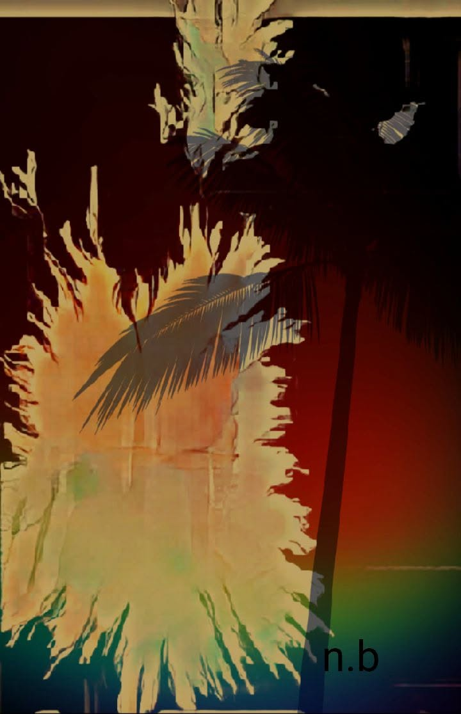

''Vertiges ..''
est un voyage au cœur de la mémoire et de la désillusion.
C’est le poème d’une âme en équilibre sur le fil des blessures, entre cri et silence.
Chaque vers s’y soulève comme une respiration arrachée à la chute.
Écrire devient ici un acte de survie, une manière de refuser l’effacement.
-Vertiges par:
Nadya Benamar
Si vides remplis de vertiges,
des rêves insignifiants,
ils ont le don de délier les litiges
et d’effacer les affronts.
Ils l’enlaçaient, la cajolaient
dans une contrée de sang.
c’est pour dire qu’on la consolait
contre les mots insolents.
J’ai parcouru son alphabet
avec une plume cassée ;
quoiqu’il me laissa bouche bée
et troubla mes pensées.
D’où jaillit un sanglot
qui tomba sur mon papier blessé :
un cri vociféré si haut
que nos blessures s’en trouvèrent pansées.
Je me suis attachée à ses cils brisés,
je me suis brûlée pour un nouvel élan.
Avec des rimes fortes, aiguisées,
j’ai consolidé les cœurs branlants.
J’ai vidé sur mon drap mon encrier,
et j’ai tant navigué dans mon moi.
Je ne veux point oublier
ces médisances qui chassent mes joies.
J’ai du chagrin pour ma pauvre poésie,
que nous nous lèguerons comme unique bien :
ses rimes pleines de frénésie,
ses doux messages et ses lendemains.
Elle amadoue bien de tristes destins ,
ces vers au goût de nos passions,
vers révoltés envers et contre tout,
qui s’imposent à tous comme horizons :
des sourires gais ornant nos moues,
et des pleurs amers au-dedans.
L’amour de la terre et de l’olivier,
le chant des aubes opprimées,
redonnent espoir aux viviers :
les choses inertes deviennent animées.
C’est celui des hirondelles malvenues,
la rime de la dignité et de la liberté,
pour permettre à nos vues
de s’insurger contre les cécités.
Et notre espoir, teinté de sang,
sera panacée à nos douleurs ;
un jet de sang puissant
nourrira enfin nos bonheurs.
La poésie s’y dresse contre le désespoir :
elle ramasse les débris des jours,, les cils brisés, les rêves éteints, pour en faire des étincelles.
Elle parle de cette lutte invisible où l’être humain cherche encore la dignité, l’amour, la lumière.
Sous les vertiges, il y a la sève, la voix, et ce feu têtu qui refuse de mourir.
Nadya Benamar .
-Sous les vertiges (à Nadya Benamar)
Par
Djamel Metref.
Je t’ai lue,
sœur d’encre et de feu,
Et j’ai vacillé sur tes mots.
Chaque vers ouvrait un ciel bleu
Dans la poussière des tombeaux.
Sous tes mots,
le monde chancelle,
mais ne tombe pas.
Ta plume —
blessée,
rebelle —
trace encore la voie.
Tes rêves,
disais-tu,
sont insignifiants —
Pourtant ils grondent comme la mer.
Ils portent la mémoire du sang,
Le parfum grave de la terre.
Des sanglots font naître des étoiles,
des plaies,
des fleurs de papier.
Dans le tumulte,
ton âme cavale
pour mieux nous réveiller.
Sous ta plume,
le désespoir s’apaise,
Il se métamorphose en clarté.
Les cils brisés deviennent braise,
Les silences,
en humanité.
Les rêves ne sont plus insignifiants :
ils hurlent,
ils se cabrent,
ils osent.
De ton encrier jaillit le vent
qui renverse l’ombre morose.
Tu ramasses les jours en débris,
Les souffles perdus,
les voix murées,
Et tu en fais,
dans la nuit,
Des vitraux de liberté.
Tu dis :
la poésie console.
Moi,
je dis :
elle combat.
Elle porte nos deuils sur l’épaule
et redresse nos pas.
Elle ne veut pas guérir les blessures,
mais les rendre lumineuses.
Elle fait de chaque brûlure
une prière ténébreuse.
Je marche dans ton poème
Comme on marche dans un champ brûlé :
L’air est lourd,
mais suprême
Est l’éclair de beauté.
Ô sœur des mots insurgés,
ta voix fend le silence amer.
Elle rappelle aux cœurs brisés
qu’ils battent encore, sous la terre.
Nous partageons la même soif,
Celle d’un mot juste,
d’un cri debout.
Sous nos vertiges se cachent des strophes
Qui refusent de plier le cou.
Et dans ton souffle —
vertige,
braise —
je vois grandir un chant humain :
celui qui s’élève,
se fraie,
se fraise,
vers l’aube…
enfin.
Et si la poésie saigne,
Qu’elle saigne donc pour le vivant —
Car du sang naît la graine,
Et du cri,
l’enfant.
Djamel Metref.
Cher ami Djamel Metref :
Tes mots m’ont rejointe,
comme une lampe posée sur la cendre.
Je les reçois,
non comme une couronne,
mais comme une alliance de flammes.
Car nous marchons
dans le même champ brûlé,
portant nos douleurs comme des semences.
Et si la nuit revient,
nous la fendrons ensemble
du tranchant de nos espérances.
Sous les braises du même souffle,
je t’entends, poète frère.
Et je murmure au cœur du monde :
tant qu’un mot respire,
le feu demeure clair.
Nadya Benamar.
Publication Facebook le 9 novembre 2025

← Tous les poèmes